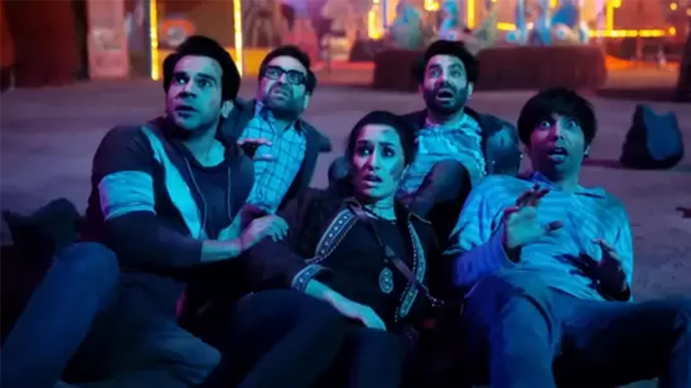
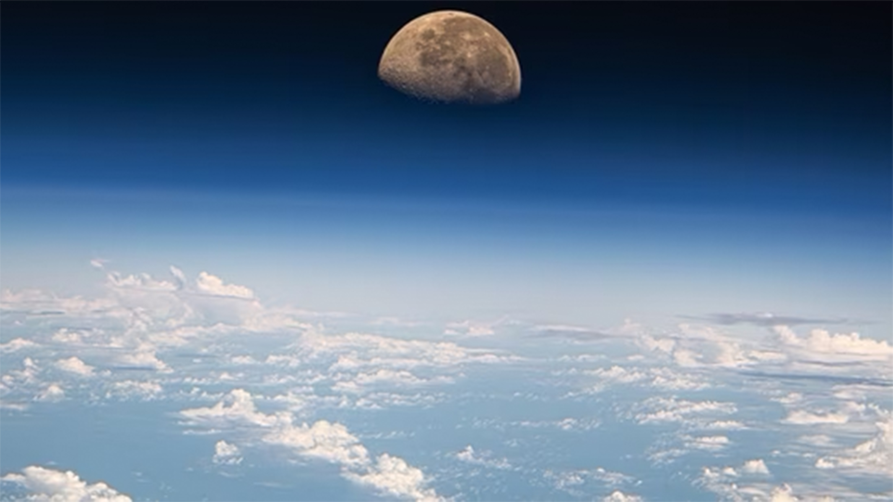

In a letter to the House Judiciary Committee, Mark Zuckerberg claimed that the Biden-Harris administration "repeatedly pressured" Meta's teams.
In a letter to the House Judiciary Committee, Mark Zuckerberg has alleged that the Biden-Harris administration "repeatedly pressured" Meta's teams to censor Covid-related posts. The Meta Chief Executive Officer also claimed that the platform had to make changes that "with the benefit of hindsight and new information," they would not make today. He added that he “regrets” that he was not "more outspoken" about it.
What does the letter say? "In 2021, senior officials from the Biden Administration, including the White House, repeatedly pressured our teams for months to censor certain COVID-19 content, including humor and satire, and expressed a lot of frustration with our teams when we didn't agree. Ultimately, it was our decision whether or not to take content down, and we own our decisions, including COVID-19-related changes we made to our enforcement in the wake of this pressure," Zuckerberg said in the letter,” according to ANI.
"I believe the government pressure was wrong, and I regret that we were not more outspoken about it. I also think we made some choices that, with the benefit of hindsight and new information, we wouldn't make today. Like I said to our teams at the time, I feel strongly that we should not compromise our content standards due to pressure from any Administration in either direction and we're ready to push back if something like this happens again," he added.
The House Committee on the Judiciary, of the Republican Party, posted Zuckerberg’s letter on X. "Mark Zuckerberg just admitted three things: 1. Biden-Harris Admin "pressured" Facebook to censor Americans. 2. Facebook censored Americans. 3. Facebook throttled the Hunter Biden laptop story. Big win for free speech,” the caption read.
In the letter, Zuckerberg also recalled that the FBI warned Meta about a potential Russian disinformation operation about the Biden family and Burism before the 2020 election. Meta subsequently demoted a story on allegations of corruption involving the Biden family. However, Zuckerberg asserted that the story should not have been demoted as it was not Russian disinformation.
"That fall, when we saw a New York Post story reporting on corruption allegations involving then-Democratic presidential nominee Joe Biden's family, we sent that story to fact-checkers for review and temporarily demoted it while waiting for a reply. It's since been made clear that the reporting was not Russian disinformation, and in retrospect, we shouldn't have demoted the story," Zuckerberg said.
Stree 2 box office collection day 12: The film further banked on another extended weekend, adding another ₹17 crore to its earnings on Janmashthami.
Stree 2 box office collection day 12: Amar Kaushik’s 2018 film Stree was a massive hit when it was released. Its sequel, starring Rajkummar Rao, Shraddha Kapoor, Pankaj Tripathi, Abhishek Banerjee, and Aparshakti Khurana, has surpassed the original. Sacnilk.com reports that the film has collected over ₹400 crore net in India less than two weeks after its release. (Also Read: Stree 2 box office collection day 11: Shraddha Kapoor film earns ₹386 crore in India so far)
According to the website, Stree 2 has collected ₹291.65 crore net in its first week alone, with collections seeing a hike despite it being the second week. The film made ₹8.5 crore during the paid premieres, making ₹51.8 crore, ₹31.4 crore, ₹43.85 crore and ₹55.9 crore from Thursday-Sunday. From Monday-Thursday the film made ₹38.1 crore, ₹25.8 crore, ₹19.5 crore and ₹16.8 crore.
In Stree 2’s second week, it collected ₹17.5 crore, ₹33 crore and ₹42.4 crore between Friday and Sunday. On Monday, the film is estimated to have made ₹17 crore net at the box office in India, taking its total to ₹401.55 crore net. Amar Kaushik on Stree 2
Director Amar spoke to PTI recently and revealed that he never thought his debut film would be a horror-comedy. He would’ve debuted with Chor Nikal Ke Bhaga (which he later produced) if it had been up to him.
“When Stree released, it was my first film, I was very nervous. I never wanted to start my career with a horror film, that was the last thing I thought I would make. While we were editing the film, we felt this was a different kind of film as there was no reference point for it,” he said, adding, “I was also an audience member a few years back, and I was craving for good cinema, and something new. When I got the chance to make it (Stree), I tried to give something new.”
A NASA astronaut shared that he captured the moon setting over the Pacific while on the cupola to shoot Tropical Storm Hone near Hawaii.
Matthew Dominick, a NASA astronaut onboard the International Space Station (ISS), often entertains his followers with pictures taken from space. Whether it's a horizontal sunrise or lights on Earth as seen from the ISS, his pictures never fail to evoke a sense of amazement in people. This latest share by the astronaut is likely to have the same effect on you. It shows the moon setting over the Pacific.
“The moon setting over the Pacific. Went to the cupola to shoot Tropical Storm Hone near Hawaii but right after we passed by the storm the moon started to set. 400mm, ISO 500, 1/20000s shutter speed, f2.8, cropped, denoised,” he wrote as he posted the photo.
Since being shared, the photo has gone viral with over 6.3 lakh views. It has further collected nearly 7,400 likes - and the numbers are still increasing. Many reacted to the share, with some calling the picture “incredible”.
“Incredibly sharp, especially considering you have to shoot through the windows on the cupola! Do you ever run into the issue of the windows taking away sharpness in imagery?” questioned an X user. Another added, “Star Wars vibe.”
A third joined, “This is absolutely mind-boggling.” A fourth wrote, “This photograph touched my heart.
NASA says it is “a small module designed for observing operations outside the station such as robotic activities, the approach of vehicles, and spacewalks.” It is a six-sided window that provides a spectacular video of the Earth and celestial objects.
What are your thoughts on this incredible picture of the moon captured by the photographer?